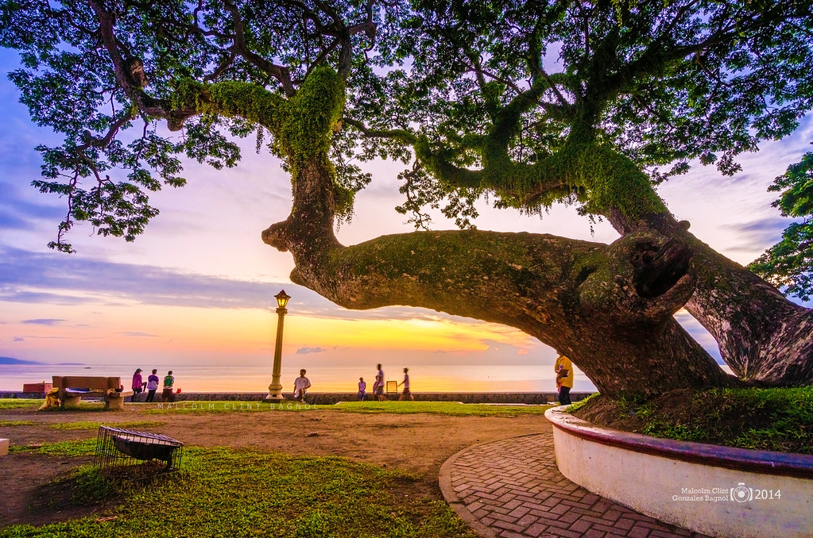

Belfry Tower
The historical Belfry Tower or Kampanarya has stood in Dumaguete for over 200 years, making it the oldest bell tower in Visayas. The centuries old landmark has served as the town’s watchtower during the World Wars and even before that, to forewarn the townspeople about any incoming danger.

Catherine of Alexandria Church
Built in 1754 and eventually finished in 1776, the Catherine of Alexandria Church is considered to be the oldest stone church in Negros. It stands next to the famous Belfry Tower and is also referred to as the Dumaguete Cathedral Church. The Cathedral is a famous spot for both tourists and locals alike even during off mass hours. Devotees believe that the patroness of the church grants miracles to those who believe.

Rizal Boulevard
Dumaguete's Rizal Boulevard is one of the most famous spots in the city for its breathtaking views of the sea. The boulevard’s stretch of lamp posts and trees are easily viewable from out at sea making it one of the most recognizable areas in the city. While you enjoy the view, it’s become tradition to enjoy an order of fried tempura from one of the many stalls lined up in the street.
Accommodation

Go Hotels
Go Hotels is a Philippine chain of budget hotels owned and operated by Robinsons Land Corporation, a subsidiary of JG Summit Holdings conglomerate of Filipino-Chinese entrepreneur John Gokongwei Jr. As of January 2021, the company has 17 hotels, all located in the Philippines.

Hotel Essencia
Hotel Essencia aims to provide a relaxing and enjoyable experience for its guests, and many visitors return year after year. If you’re planning a trip to Dumaguete City, it’s worth considering Hotel Essencia for your stay!
Bethel Guest
Bethel Guest House their guest house of choice when visiting Dumaguete City. Providing an ideal mix of value, comfort and convenience, it offers an array of amenities designed for travelers like you.
Transportation
Tricycle
Tricycles are built in a variety of styles, which differ from city to city, and are usually made locally by building a sidecar and affixing it to an imported motorcycle. Usually both the cycle and sidecar are covered, but not always by the same roof. Larger companies, such as Fitcor Marketing, also manufacture passenger tricycles.[2] They are built with more seats, with the motor situated at the back rather than below the driver as per a motorcycle.

Jeep
While Jeep vehicles are not typically associated with Dumaguete specifically, it's possible that Jeep vehicles can be found there, as they are sold in many countries around the world. If you're interested in Jeep vehicles in Dumaguete, you might want to check with local dealerships or online listings.
Ceres
Dumaguete, the city you mentioned earlier. Ceres Liner operates bus routes connecting various cities and provinces across the Philippines, including Dumaguete. They provide transportation services for passengers traveling within and between regions of the country.
About Us

Spanish Colonial Era
Like many cities in the Philippines, Dumaguete has a rich history dating back to the Spanish colonial period. The city was founded in the 18th century and became an important center of trade and commerce under Spanish rule. During this time, Dumaguete was part of the Spanish East Indies and played a significant role in the region's economy and administration.
American Occupation
Dumaguete, like the rest of the Philippines, came under American control after the Spanish-American War in 1898. The Americans established civil governance in the country, introducing educational and infrastructural reforms. Dumaguete saw the establishment of schools, roads, and other modern amenities during this period, shaping its development in the early 20th century.
World War II
During World War II, Dumaguete, like many parts of the Philippines, experienced the Japanese occupation. The city was occupied by Japanese forces, and residents endured hardships during this time. The local population also contributed to the resistance movement against the Japanese occupation, with acts of guerrilla warfare and sabotage occurring in the region. The war left lasting scars on Dumaguete's landscape and community, but it also demonstrated the resilience and bravery of its people.
Delicacies
Silvanas
Silvanas are delectable frozen cookies made of cashew-meringue wafers, buttercream, and covered with cookie crumbs. They are a popular pasalubong (gift) item from Dumaguete, with several local bakeries known for their tasty silvanas.
Puto Maya
Puto Maya is a type of sticky rice cake made from glutinous rice, coconut milk, and sugar, usually served with ripe mango slices or hot chocolate. It's a popular breakfast or snack item in Dumaguete and other parts of the Visayas region.
Sans Rival
Similar to silvanas, sans rival is a Filipino dessert made from layers of cashew meringue, buttercream, and chopped cashews. It's rich, crunchy, and often enjoyed as a special treat during celebrations and gatherings.
The Developer

Charles Alex C. Amil
"It's fine to celebrate success, but it is more important to heed the lessons of failure."
Follow me on my Social Media Account!
@not_charles
Youtube